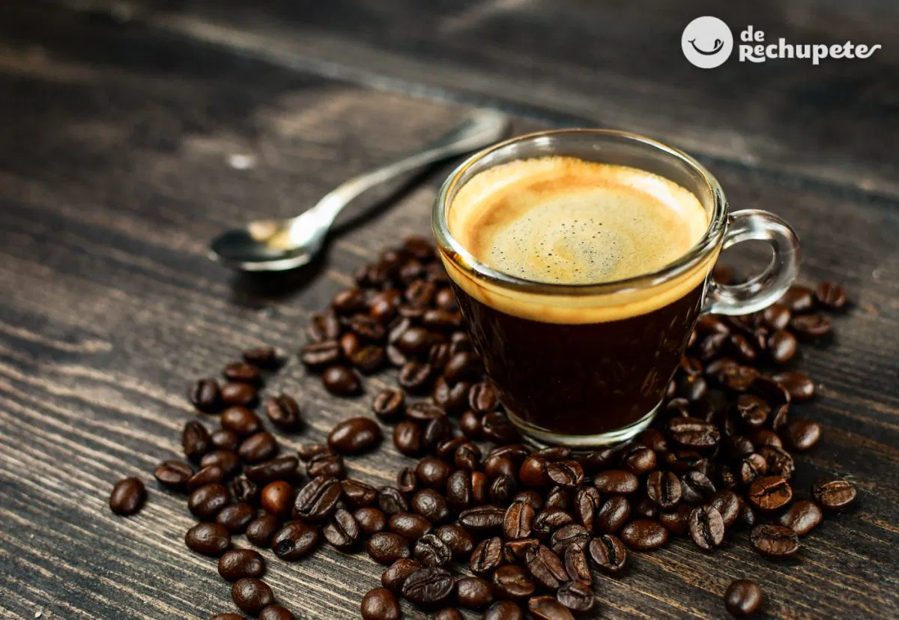

Nuestros Cafés

Expreso
Fuerte, intenso y con un aroma que conquista.
Su sabor es robusto y concentrado, con notas amargas y un retrogusto persistente que deleita a los amantes del café puro.

Capuchino
Una mezcla perfecta de espresso, leche y espuma.
Su sabor es equilibrado, cremoso y menos intenso que un espresso solo, ya que la leche y la espuma suavizan el sabor del café.
Americano
El café americano es un espresso diluido con agua caliente para suavizar su sabor.
Es una bebida con un sabor más ligero que un espresso puro, resultando en una bebida con un perfil más equilibrado.

Latte
Suave, cremoso y con el toque justo de dulzura.
Apariencia: Elegante y sofisticado, a menudo con un arte latte en la espuma.